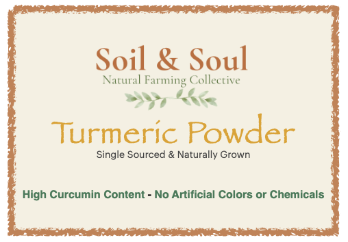
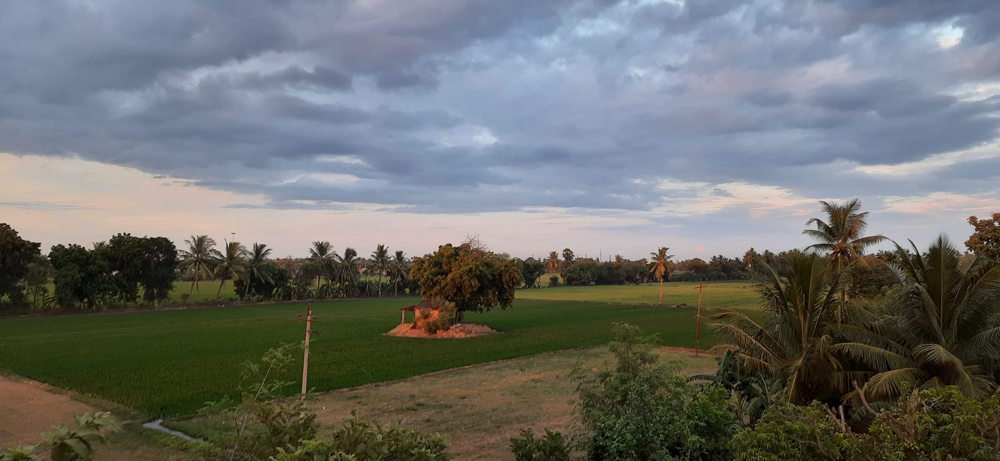
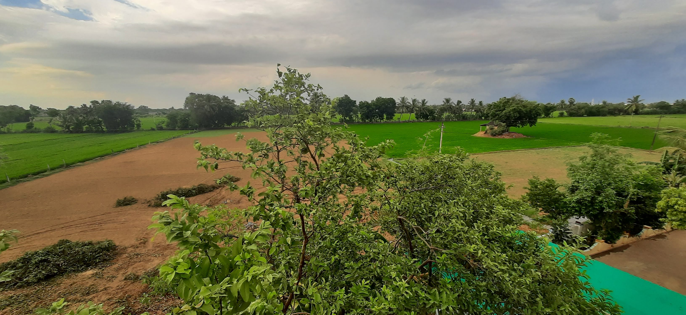

Natural farming, community-driven marketplace, and direct access to honest, traceable farm produce.

Naturally grown produce, rooted in tradition and soil health.
Soil & Soul Farms is a collective of passionate natural farmers who believe that true food begins with living soil and mindful care. Together, we practice regenerative and cow-based natural farming, using no chemical pesticides, only earth-friendly inputs, and techniques that restore soil health and biodiversity.
Our mission is to empower farmers and the earth alike, bringing honest, traceable, and nutritious produce directly to consumers while strengthening rural livelihoods. Each of our farms reflects harmony with nature — cultivating crops like rice, vegetables, fruits, seeds, and farm-fresh eggs, all grown sustainably and shared with integrity.
We are more than just a farmers’ group — we are a movement for sustainable, local, and conscious food systems. By connecting mindful consumers with natural farmers, we aim to rebuild trust in food and revive the timeless wisdom of Indian agriculture.


We welcome visitors by appointment. Farm tours, workshops on natural farming and seasonal harvest events. Please book in advance.
Book a visit: Contact us
Email: mailtosoilandsoulfarms (at) gmail.com
Phone / WhatsApp: +91-99 1234 1248